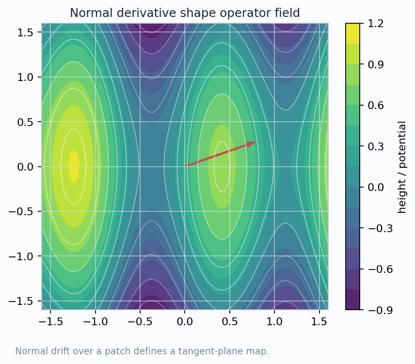
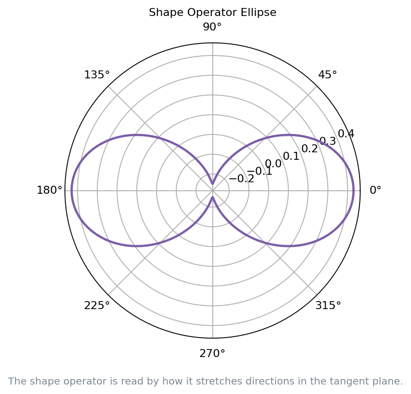
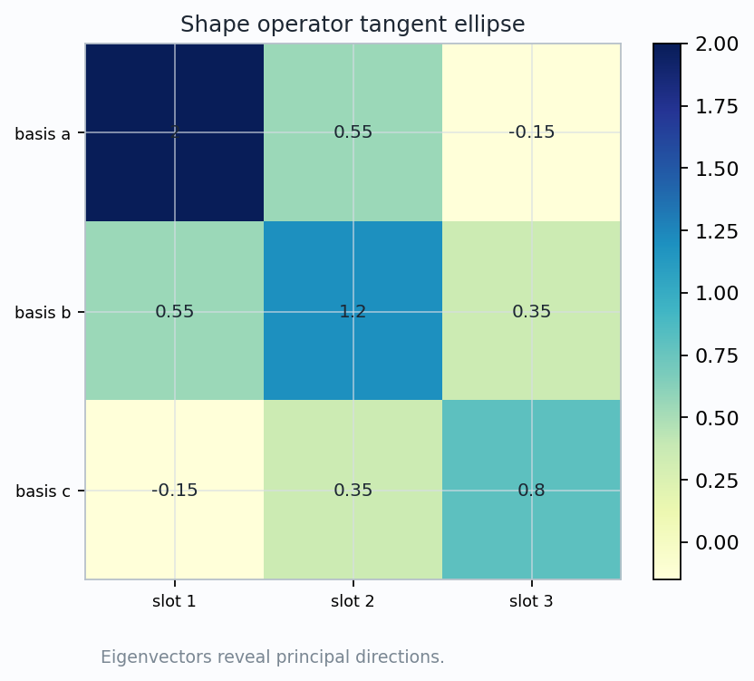
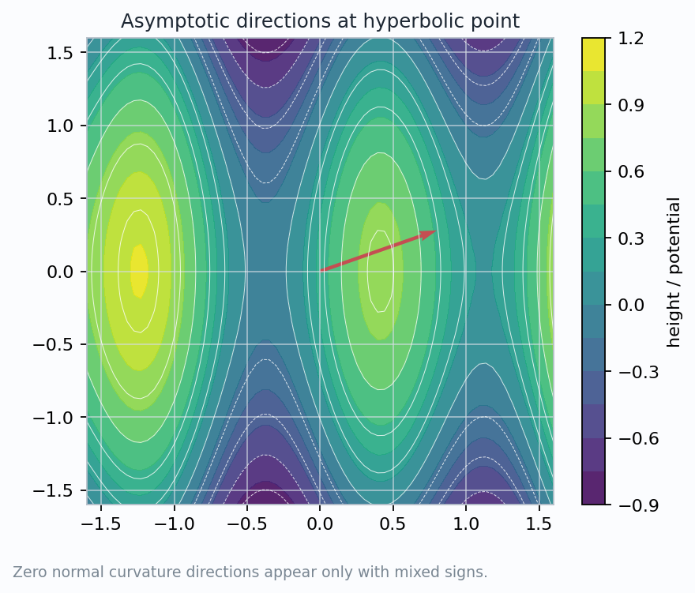
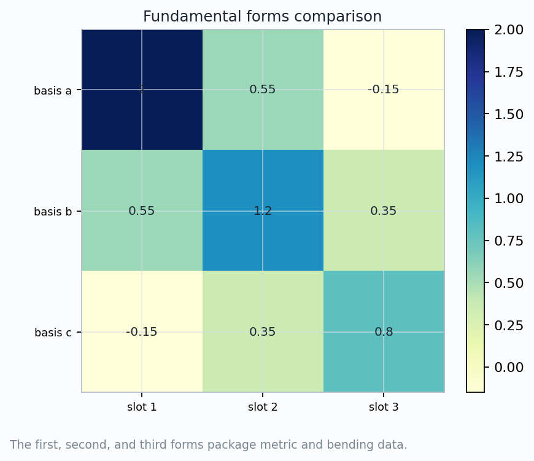

How the derivative of the unit normal becomes a linear map on the tangent plane.
A surface bends because its normal field changes. The shape operator records that change in tangent coordinates.
Move on the surface in a tangent direction \(v\). Watch the unit normal \(n\) change.
The derivative is tangent to the unit sphere, hence tangent to the surface at the contact point.
Eigenvectors are principal directions; eigenvalues are principal curvatures.


Mean curvature uses \(H=\frac12\operatorname{tr}S\).
Gaussian curvature uses \(K=\det S\).
The ellipse axes reveal the directions where bending is extremal.


If \(k_1k_2<0\), Euler's formula has two real zero directions. If \(k_1,k_2\) have the same sign, it has none.

Discussion prompt: Which part of the answer would change if the frame were rotated? Which part is invariant?
The map \(v\mapsto -D_vn\) turns visible normal drift into a tangent-plane operator.
Eigenvectors give principal directions; eigenvalues give the two extremal normal curvatures.
Mean and Gaussian curvature are \(\frac12\operatorname{tr}S\) and \(\det S\).